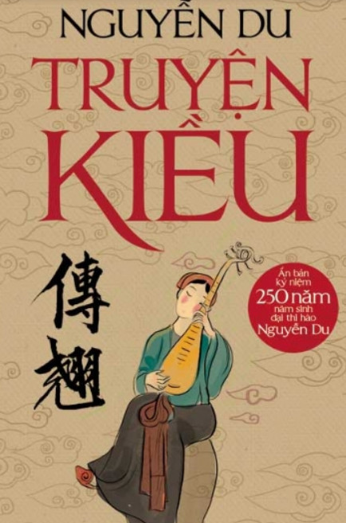
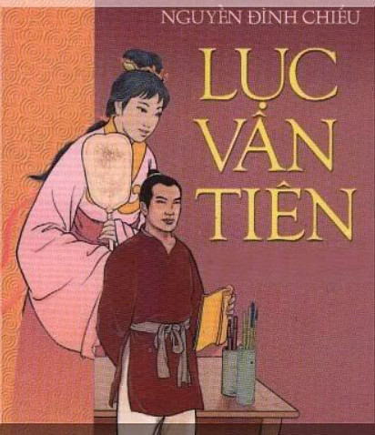
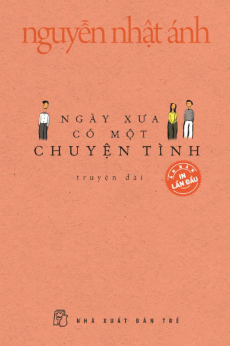
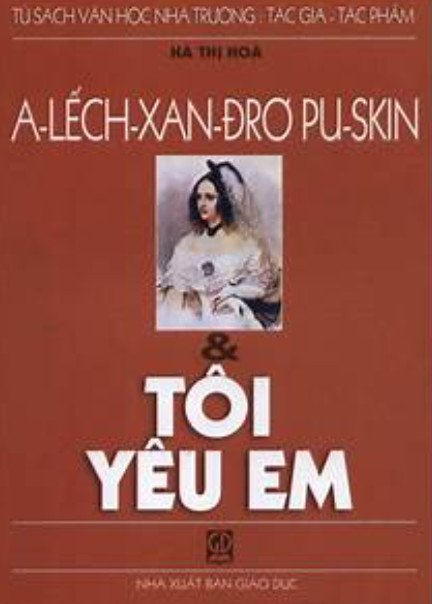

1..Trăm năm trong cõi người ta,
2..Chữ tài chữ mệnh khéo là ghét nhau.
3..Trải qua một cuộc bể dâu,
4..Những điều trông thấy mà đau đớn lòng.
5.. Lạ gì bỉ sắc tư phong,
6..Trời xanh quen thói má hồng đánh ghen.
7..Cảo thơm lần giở trước đèn,
8..Phong tình có lục còn truyền sử xanh.
Tác giả: Nguyễn Du

Trước đèn xem truyện Tây minh,
Gẫm cười hai chữ nhân tình éo le.
Hỡi ai lẳng lặng mà nghe,
Dữ răn việc trước lành dè thân sau.
Trai thời trung hiếu làm đầu
Tác giả: Nguyễn Đình Chiểu

Mặt mũi đỏ rực, hai mắt long lanh, chứa một nỗi mê say đầy đau khổ, cả mười đầu ngón tay Nhĩ đang bấu chặt vào cái bậu cửa sổ, những ngón tay gầy guộc ra phía ngoài cửa sổ như đang ra hiệu cho một người nào đó.
Tác giả: Nguyễn Minh Châu
– Miền nè.
– Gì hở Phúc?
– Có chuyện này nè.
– Chuyện gì vậy?
– Ở trong lớp mình ấy mà.
– Trong lớp mình sao?
Tác giả: Nguyễn Nhật Ánh

Tôi yêu em âm thầm không hi vọng
Lúc rụt rè, khi hậm hực lòng ghen
Tác giả: Puskin
